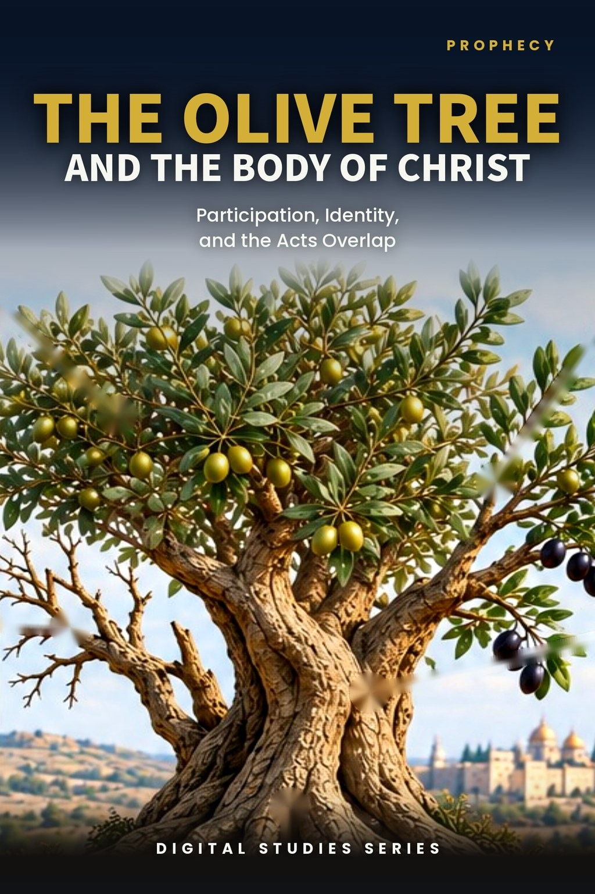
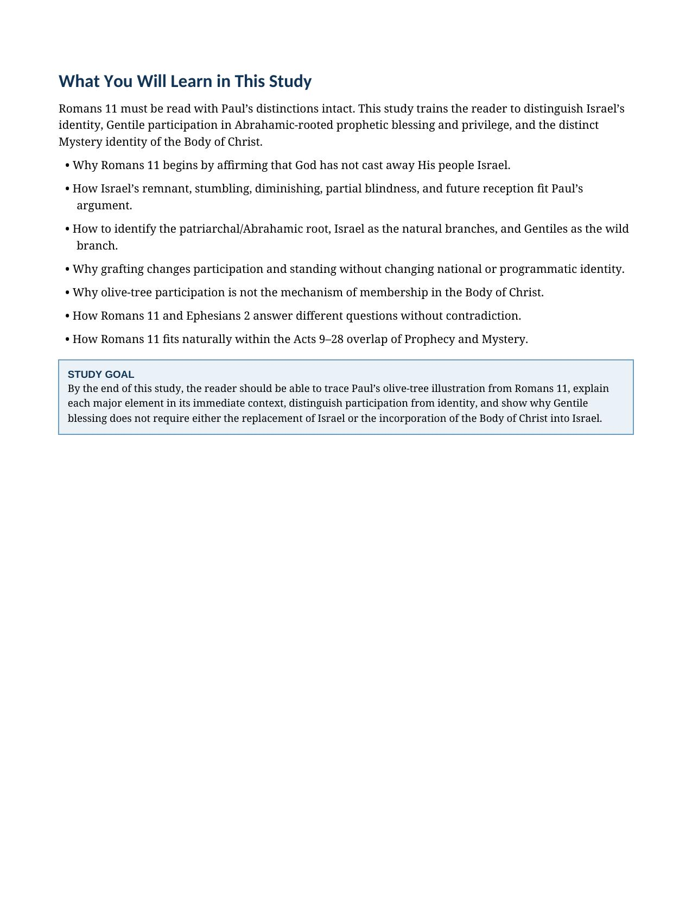
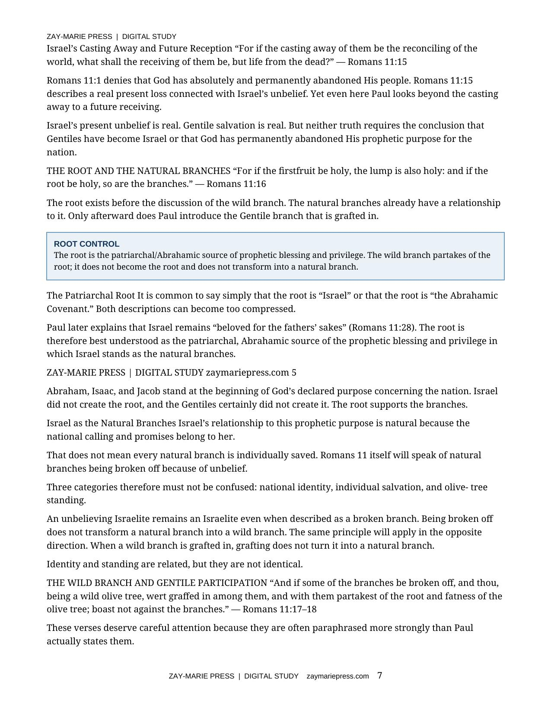
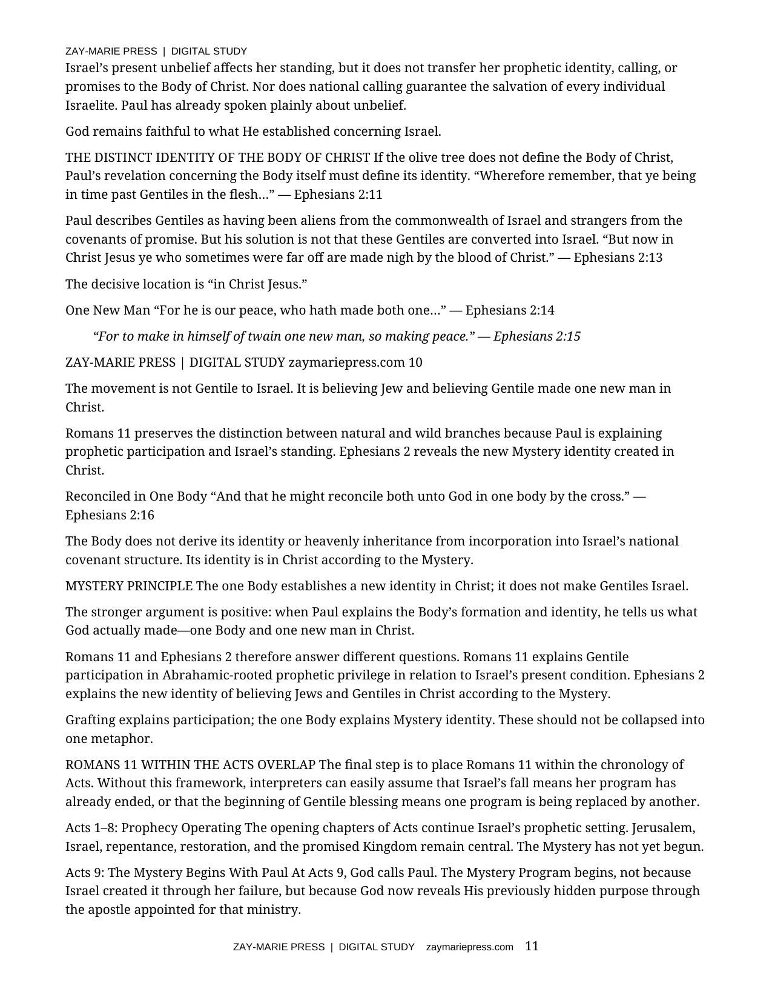
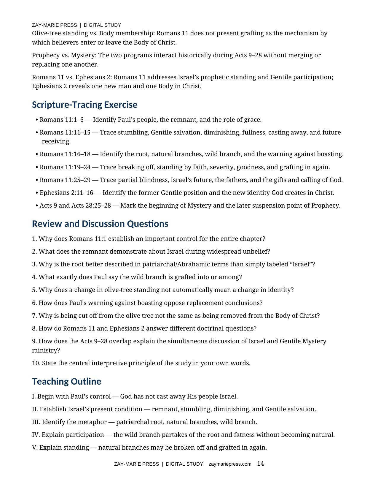

The Olive Tree and the Body of Christ
Participation, Identity, and the Acts Overlap
A Biblical Examination of Romans 11, Israel’s Future, Gentile Participation, the One Body, and the Acts Overlap
Romans 11 explains Israel’s present condition, Gentile participation in Abrahamic-rooted prophetic blessing, and God’s continuing purpose for the nation. This study identifies the root, natural branches, wild branch, breaking off, and grafting without making participation a change of identity.
It then sets Romans 11 alongside Ephesians 2: the olive tree explains prophetic participation in relation to Israel; the one Body explains the distinct Mystery identity created in Christ. Both truths stand together during the Acts Overlap without merging Prophecy and Mystery.
What Does Romans 11 Teach About the Olive Tree?
Paul begins Romans 11 by denying that God has cast away His people Israel. Israel remains the natural-branch nation even amid unbelief, stumbling, partial blindness, and broken branches. The patriarchal root remains the source of prophetic blessing and privilege; Gentiles are a wild branch grafted in among the branches.
Grafting changes participation and standing, not national or programmatic identity. The Body of Christ is not defined by olive-tree membership but by the Mystery revealed through Paul: one new man and one Body in Christ. Romans 11 belongs within the Acts Overlap, where Prophecy and Mystery operate distinctly and concurrently through Acts 28.
How These Studies Relate
Study 13 interprets Paul’s olive-tree image in Romans 11 and the participation of Gentiles in the patriarchal root’s blessing.
Study 17 — The Abrahamic Covenant Return to the covenant’s actual terms in Genesis; those promises explain the root without turning all beneficiaries into Israel or transferring the land promise.
Study 40 — Who Is Abraham’s Seed? Follow Paul’s several uses of Abraham’s seed in Romans and Galatians; this tests exactly what faith, blessing, and heirship grant before drawing identity conclusions.
Study 9 — The Remnant Identify the believing Israelite remnant within Romans 11; it clarifies whom Paul means among the natural branches.
Let Paul’s Distinctions Govern the Illustration
Israel Has Not Been Cast Away
Begin where Paul begins: God has not abandoned His people Israel.
The Patriarchal Root
Identify the Abrahamic source of prophetic blessing and privilege that supports the branches.
Natural and Wild Branches
Distinguish Israel’s natural relationship to the root from Gentile participation among the branches.
Grafting and Standing
See why breaking off and grafting in change standing without changing the branch’s identity.
Israel’s Future Remains
Read partial blindness, future reception, and the gifts and calling of God in their immediate context.
The Olive Tree and the One Body
Keep Romans 11’s prophetic participation distinct from the Mystery identity Paul explains in Ephesians 2.
Examine the Passages for Yourself
Romans 11:1–6
Establishes that God has not cast away His people Israel and identifies the remnant.
Romans 11:11–15
Traces Israel’s stumbling, Gentile salvation, and future receiving.
Romans 11:16–18
Introduces the patriarchal root, natural branches, wild branch, and warning against boasting.
Romans 11:19–24
Explains breaking off, standing by faith, and the possibility of grafting in again.
Romans 11:25–29
Affirms Israel’s partial blindness, future, and the gifts and calling of God.
Ephesians 2:11–16
Reveals the one new man and one Body in Christ according to the Mystery.
Jeremiah 11:16–17
Supplies Old Testament olive-tree imagery for careful comparison.
Acts 9; 28:25–28
Marks Mystery’s beginning with Paul and the later suspension of Prophecy.
Grafting Changes Participation, Not Identity
“The wild branch is genuinely grafted in, yet it does not become a natural branch.”
Romans 11 preserves Israel’s prophetic standing while explaining Gentile participation in Abrahamic-rooted blessing. Ephesians 2 establishes the Body’s new Mystery identity in Christ; these truths answer different questions and must not be collapsed into one metaphor.
Preview the Study Before You Purchase
Click any page to enlarge it for reading.
{kind=link}

What You Will Learn
See the study’s central questions and the controlling distinction between identity and participation.
{kind=link}

The Root and the Branches
Examine the patriarchal root, natural branches, and the wild branch in Paul’s illustration.
{kind=link}

The Body’s Distinct Identity
Set Ephesians 2 beside Romans 11 and place both within the Acts Overlap.
{kind=link}

Scripture Tracing and Teaching
Use the review questions and outline to test the study’s distinctions from Scripture.
A Focused Study Built for
Understanding and Teaching
15-Page In-Depth Biblical Study
A focused, Scripture-based reading of Romans 11’s olive-tree illustration and Israel’s continuing future.
Nine Core Teaching Sections
Move from Paul’s opening control through the branches, the Body, and the Acts Overlap.
Romans 11 Phrase-by-Phrase Study
Work through the root, branches, grafting, partial blindness, and Israel’s future reception.
Israel and Gentile Participation
Distinguish standing and blessing from transferred identity, covenant status, or national inheritance.
Romans 11 and Ephesians 2 Comparison
See why the olive tree and the one Body address different doctrinal questions.
Ten Review Questions
Test the study’s controls concerning Israel, Gentiles, the root, and Body identity.
Teaching Outline
A ready framework for presenting Paul’s argument with precision and restraint.
Guided Study and Final Synthesis
Trace the passages directly and explain why participation does not determine identity.
The Olive Tree and the Body of Christ
15-page digital PDF · For personal use
Want More Than a Focused Study?
Digital Studies examine particular biblical subjects and difficult passages. The 40-lesson Biblical Hermeneutics course teaches a complete, repeatable method for establishing meaning in context, determining proper assignment, and making responsible application.